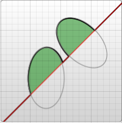

SVG
Coordinates, Basic Shapes, Animations
Introduction
Types of graphics
| Raster | Vector |
Composed of a fixed number of square pixels. |
Created with mathematical equations, lines and curves — using points fixed on a grid. |
|
Can become distorted if you resize them beyond the amount of space the pixels were meant to fill. |
Can be made infinitely larger (or smaller) without losing resolution and quality. |
File types: JPG, GIF, PNG, TIF, BMP and PSD. |
File types: AI, CDR and SVG |
What is SVG
SVG refers to Scalable Vector Graphics.
It has been developed by the World Wide Web Consortium (W3C) since 1999.
There was relatively little support for SVG until 2017. Now SVG widely used for website images.
SVGs are used for icons, logos, graphic designs, and fonts.
A simple SVG document consists of the <svg> root element and several basic shapes that
build a graphic together. In addition, there is the <g> element, which is used to group
several basic shapes together.
Starting from this basic structure, the SVG image can become arbitrarily complex. SVG supports gradients, rotations, filter effects, animations, interactivity with JavaScript and so on.
Most popular apps for editing SVG files
- Any text editor or IDE
- Inkscape
- Adobe Illustrator
- CorelDRAW
- Sketch
- etc.
The benefits of SVG
- Text-based format
- Scalability
- High performance
- Small file size
- Numerous editing and animating opportunities
- Integration with HTML, XHTML, and CSS
- W3C Document Object Model support
Methods to display SVG in the browser
- Can be directly embedded in the XML and HTML.
-
As an
imgelement.
-
As an object element.
-
As an iframe element.
-
As a CSS background-image
background-image: url(happy.svg); - SVG can be created dynamically with JavaScript and injected into the HTML DOM.
SVG properties
-
The
widthandheightproperty define how much space the image takes up in the browser. -
The
viewBoxproperty defines a coordinate system for the elements inside the image.
Coordinates
For all elements, SVG uses a coordinate system.
The top left corner of the document is considered to be the point
(0,0), or point of origin. Positions are then measured
in pixels from the top left corner, with the positive x direction being to the right, and the positive y
direction being to the bottom.

The first two numbers of viewBox define which coordinate should be at the top
left corner of the image.
viewBox = "min-x min-y width height"
Basic SVG shapes
- Rectangle:
<rect> - Circle:
<circle> - Ellipse:
<ellipse> - Line:
<line> - Polyline:
<polyline> - Polygon:
<polygon> - Path:
<path>
Rectangle
The <rect> element draws a rectangle on the screen.
<rect x="60" y="10" rx="10" ry="10" width="30" height="30"/>
Attributes:
x- the position of the top left corner of the rectangle.y- the position of the top left corner of the rectangle.width- the width of the rectangle.height- the height of the rectangle.rx- the x radius of the corners of the rectangle.ry- the y radius of the corners of the rectangle.
Circle
The <circle> element draws a circle on the screen.
<circle cx="25" cy="75" r="20"/>
Attributes:
r- the radius of the circle.cx- the x position of the center of the circle.cy- the y position of the center of the circle.
Ellipse
The <ellipse> element draws a circle, but you can scale the x and y radius
separately to get ellipse element.
<ellipse cx="75" cy="75" rx="20" ry="5"/>
Attributes:
rx- the x radius of the ellipse.ry- the y radius of the ellipse.cx- the x position of the center of the ellipse.cy- the y position of the center of the ellipse.
Line
The <line> element takes the positions of two points as parameters and
draws a straight line between them.
<line x1="10" x2="50" y1="110" y2="150"
stroke="black" stroke-width="5"/>
x1- the x position of point 1.y1- the y position of point 1.x2- the x position of point 2.y2- the y position of point 2.
Polyline
The <polyline> is a group of connected straight lines.
<polyline points="60, 110 65, 120 70, 115 75, 130
80, 125 85, 140 90, 135 95, 150 100, 145"/>
-
points- a list of points. Each number must be separated by a space, comma, end of line or a line feed character with additional whitespace permitted. Each point must contain two numbers: an x coordinate and a y coordinate. So, the list(0,0),(1,1), and(2,2)could be written as0, 0 1, 1 2, 2.
Polygon
The <polyline> is composed of straight line segments connecting a list of
points. The path automatically connects the last point with the first, creating a closed shape.
<polygon points="50, 160 55, 180 70, 180 60, 190
65, 205 50, 195 35, 205 40, 190 30, 180 45, 180"/>
-
points- a list of points. Each number must be separated by a space, comma, end of line or a line feed character with additional whitespace permitted. Each point must contain two numbers: anxcoordinate and aycoordinate. The list(0,0),(1,1), and(2,2)could be written as0, 0 1, 1 2, 2. The drawing then closes the path, so a final straight line would be drawn from(2,2)to(0,0).
Path
The <path> is an element, that allows to draw rectangles (with or without
rounded corners), circles, ellipses, polylines and polygons.
<path d="M20,230 Q40,205 50,230 T90,230" fill="none"
stroke="blue" stroke-width="5"/>
d- a list of points and other information about how to draw the path.
Path
-
M- "Move To". It takes two parameters, a coordinate(x)and coordinate(y)to move to. The "Move To" command appears at the beginning of paths to specify where the drawing should start. -
L- "Line To". It takes two parameters (x and y coordinates) and draws a line from the current position to a new position. H- draws a horizontal line. This command takes one parameter.V- draws a vertical line. This command takes one parameter.-
Z- "Close Path". This command draws a straight line from the current position back to the first point of the path.
Path
Relative commands
Relative commands are called by using lowercase letters, and rather than moving the cursor to an exact coordinate, they move it relative to its last position.
The path will move to point (10, 10) and then move
horizontally 80 points to the right, then 80 points down, then 80 points to the left, and then back to the
start.
Bézier Curves
Cubic curve
C - the cubic curve. It takes in two control points for each point. To create a
cubic Bézier, three sets of coordinates need to be specified
(C x1 y1, x2 y2, x y).
The last set of coordinates here (x, y) specify where
the line should end. The other two are control points. The control points essentially describe the slope
of the line starting at each point.
The Bézier function then creates a smooth curve that transfers from the slope established at the beginning of the line, to the slope at the other end. Several Bézier curves can be strung together to create extended, smooth shapes.
Bézier Curves
Cubic curve examples

Bézier Curves
Quadratic curve

Q - the quadratic curve. It requires one control point which determines the
slope of the curve at both the start point and the end point. It takes two parameters: the control point
and the end point of the curve (Q x1 y1, x y).
Arcs
A - the arc. Arcs are sections of circles or ellipses.
A rx ry x-axis-rotation large-arc-flag sweep-flag x y
At its start, the arc element takes in two parameters for the x-radius and y-radius. The final two
parameters designate the x and y coordinates to end the stroke. Together, these four values define the
basic structure of the arc. The third parameter describes the rotation of the arc.
Acrs examples

Style SVG
Attributes:
fillsets the color inside the object.strokesets the color of the line drawn around the object.fill-opacitysets the fill opacity.stroke-opacitysets the stroke opacity.
<rect x="10" y="10" width="100" height="100"
stroke="blue" fill="purple" fill-opacity="0.5" stroke-opacity="0.8"/>
CSS styles
It's possible to add CSS styles to the SVG using the inline style attribute.
It's available to use the CSS @import rule.
It's possible to write styles for SVG files in an external CSS file consumed in the documents that include these SVG files.
Transformation
translate()- to move an element around.rotate()- to rotate an element.
skewX() and skewY() - to make a rhombus out of a
rectangle. Each one takes an angle that determines how far the element will be skewed.
scale() - to change the size of an element.Animation
Ways to animate SVG
- SMIL, which is the native SVG animation specification
- Web Animations API, which is a native JavaScript API allowing you to create more complex sequential animations without loading any external scripts
- WebGL
- CSS animation
Animating with SMIL
There is a syntax for animations built right into SVG.
- You need to animate properties that CSS can’t, like the shape itself.
- You need other SMIL specific features, like beginning an animation when another ends without manually syncing durations/delays. Or interaction stuff, like beginning an animation on a click.
Animating with CSS @keyframes
SVG elements can be targeted and styled with CSS. You can apply animation through @keyframes.
.left-leg {
fill: orange;
animation: dance 2s infinite alternate;
}
@keyframes dance {
100% {
transform: rotate(3deg);
}
}
- The animation is fairly simple.
- You only need to animate properties that CSS can animate.
- You already know and are comfortable with CSS animations.
Animating with JavaScript
Animating SVG elements with JavaScript can be much like animating DOM elements. With JavaScript, you have access to things like requestAnimationFrame (or other loops), so you can animate just by way of rapidly changing property values.
- You’re working in JavaScript anyway, perhaps your animation has to do with data you receive with JSON or the like.
- You need JavaScript anyway, because you need the logic or math or something else really only possible there.
- You’re interested in the JavaScript solving some bugs for you.
- The scope of your animation is rather large/complicated and you need the abstraction and organization JavaScript can provide.
Browser Support
Browser support for SVG is available in all modern browsers. There are some issues with scaling in IE 9 through IE 11 however they can be overcome with the use of the width, height, viewbox, and CSS.
Thank you for watching